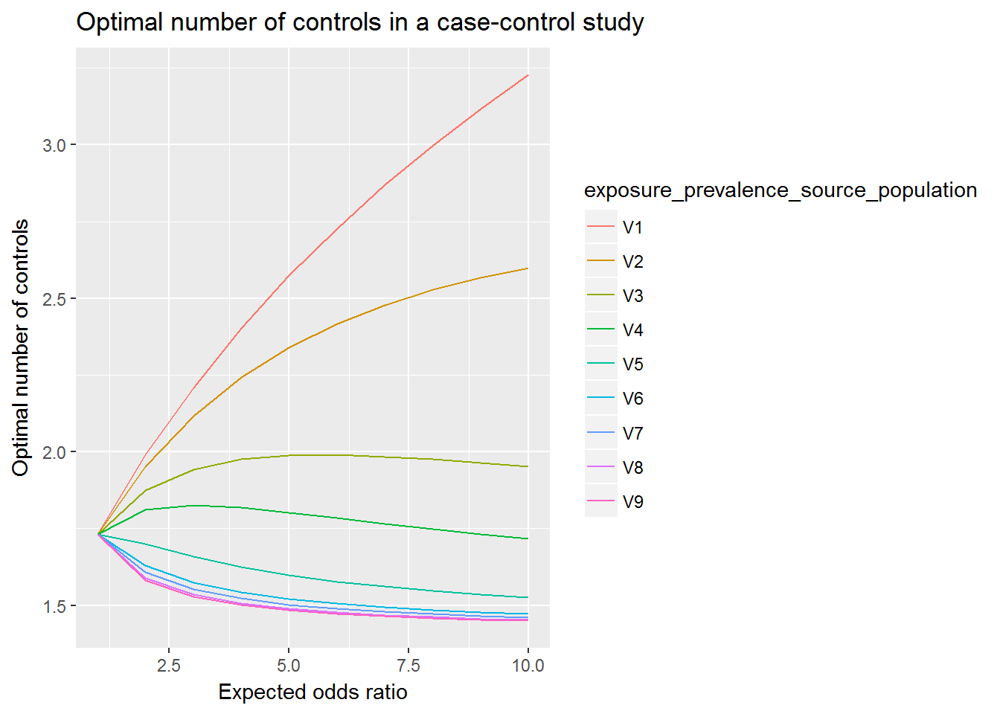

Last updated: 2017-10-12
Code version: bf5de19
Given an expected odds-ratio \(OR = 2\), and an exposure-prevalence in the source-population of \(p_{1} = 0.05\), what is the optimal ratio of cases and controls?
The goal is to minimize the variance of the log odds-ratio, narrowing the 95% confidence interval with respect to the cases:controls ratio, given an expected OR and exposure prevalance in the source-population.
\(min(Var(ln(OR)))\)
Where
\(Var(ln(OR)) = \frac{1}{a} + \frac{1}{b} + \frac{1}{c} + \frac{1}{d}\)
With {a-d} the entries of the standard 2x2 contingency table.
Whe can achieve this by writing each of the entries as a function of the \(OR\), \(p_{1}\) and \(r_{1} = \frac{N_{Cases}}{N}\), and differentiating with respect to \(r_{1}\).
The analytical solution for this problem is
\(r_{1} = \frac{-2 \pm \sqrt{4 - 4*\alpha*(-1))}}{2\alpha}\)
With
\(\alpha = \frac{p_{1}(1-p_{1})}{p_{0}(1-p_{0})}-1\) and \(p_{1} = \frac{Odds_{1}}{1+Odds_{1}} = \frac{OR*Odds_{0}}{1 + OR*Odds_{0}}\)
Where \(Odds_{0}\) is the odds for controls: \(Odds_{0} = \frac{p_{0}}{1-p_{0}}\)
For this particular instance:
OR = 2
p0 = 0.05
# the math
O0 = p0/(1-p0)
O1 = OR * O0
p1 = O1/(1+O1)
a = ((p1*(1-p1))/(p0*(1-p0))) + 1
r1 = c(
(-2+sqrt(4 - 4*a*(-1)))/(2*a),
(-2-sqrt(4 - 4*a*(-1)))/(2*a))\(\left\{\right\}\)
This yields 2 results for \(r_{1}\): \(\left\{0.34, -1.05\right\}\), where \(r_{1} = 0.34\) is the only viable option.
Now the ratio of cases:controls
\(\frac{N_{cases}}{N_{controls}} = \frac{r_{1}}{1-r_{1}} = 0.51\)
So about 2 controls per case.
For a range of odds ratios and exposure rates, with plot
require(data.table)
require(ggplot2)
require(magrittr)
OR = 1:10
p0_values = c(0.01, 0.05, 0.15, 0.25, 0.5, 0.75, 0.85, 0.95, 0.99)
control_array = matrix(nrow = length(OR), ncol = length(p0_values))
for (i in 1:length(p0_values)) {
p0 = p0_values[i]
# the math
O0 = p0/(1-p0)
O1 = OR * O0
p1 = O1/(1+O1)
a = ((p1*(1-p1))/(p0*(1-p0))) + 1
r1 = c(
(-2+sqrt(4 - 4*a*(-1)))/(2*a),
(-2-sqrt(4 - 4*a*(-1)))/(2*a))
r1 = r1[r1>0] # pick only the values greater than zero
ncontrols = (1-r1) / r1
control_array[,i] = ncontrols
}
df <- as.data.table(control_array)
df[, OR:=OR]
df_melt <- melt(df, id.vars = "OR",
variable.name = "exposure_prevalence", value.name = "n_controls")
df_melt[, exposure_prevalence:=factor(exposure_prevalence,
levels = setdiff(colnames(df), "OR"),
labels = p0_values)]
# plot(OR, ncontrols,
# xlim = c(0, max(OR)),
# ylim = c(0, ceiling(max(ncontrols))),
# ylab = "Number of controls per case", xlab = "Expected odds ratio",
# main = "Optimal number of controls in a case-control study", sub = "given an exposure prevalence = 0.05 in the source population")
df_melt %>%
ggplot(aes(x = OR, y = n_controls, col = exposure_prevalence)) +
geom_line() +
labs(x = "Expected odds ratio", y = "Optimal number of controls",
title = "Optimal number of controls in a case-control study")
sessionInfo()R version 3.4.1 (2017-06-30)
Platform: x86_64-w64-mingw32/x64 (64-bit)
Running under: Windows 7 x64 (build 7601) Service Pack 1
Matrix products: default
locale:
[1] LC_COLLATE=Dutch_Netherlands.1252 LC_CTYPE=Dutch_Netherlands.1252
[3] LC_MONETARY=Dutch_Netherlands.1252 LC_NUMERIC=C
[5] LC_TIME=Dutch_Netherlands.1252
attached base packages:
[1] stats graphics grDevices utils datasets methods base
other attached packages:
[1] magrittr_1.5 ggplot2_2.2.1.9000 data.table_1.10.4
loaded via a namespace (and not attached):
[1] Rcpp_0.12.12 knitr_1.17 munsell_0.4.3
[4] colorspace_1.3-2 rlang_0.1.2 stringr_1.2.0
[7] plyr_1.8.4 tools_3.4.1 grid_3.4.1
[10] gtable_0.2.0 git2r_0.19.0 htmltools_0.3.6
[13] yaml_2.1.14 lazyeval_0.2.0 rprojroot_1.2
[16] digest_0.6.12 tibble_1.3.4 evaluate_0.10.1
[19] rmarkdown_1.6 labeling_0.3 stringi_1.1.5
[22] compiler_3.4.1 scales_0.5.0.9000 backports_1.1.0 This R Markdown site was created with workflowr